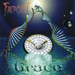

| Artist: | Farpoint |
| Title: | Grace |
| Label: | self produced |
| Length(s): | 60 minutes |
| Year(s) of release: | 2003 |
| Month of review: | [08/2003] |
| 1) | Into The Night | 5.56 |
| 2) | Dawn | 6.24 |
| 3) | Ghost | 6.39 |
| 4) | H2Origins | 7.44 |
| 5) | Yesterday | 5.44 |
| 6) | Grace | 7.00 |
| 7) | Sunset | 5.34 |
| 8) | Nevermore | 4.51 |
| 9) | Falling Down | 4.38 |
| 10) | Over Again | 5.45 |
| 11) | Into The Light | 4.03 |
Dawn opens with mellow acoustic guitar lines, a good theme though. Later the music becomes more thoughtful. The female vocals, with male backing are melodic and the melody is good, although a bit on the mellow side. Same goes for the slow flute. Later we hear some Bach on the harpsichord and keys (Cantata 140 according to the booklet). This closes the song. The next one, Ghost, is again a melodic track, this time the female voice doing the backing for the male vocals. The vocals are a bit rougher here and the song is a bit more upbeat. I am not too happy with the backing vocals wailings though. The song is mainly acoustic guitar with some prominent drumming.
H2Origins opens forcefully with a combination of acoustic guitar and sharp electric lines. The vocal part is a bit tamer, and I can only feel it as a kind of deflation. This is partly due to the easy going drums. Too bad. The electric guitar continues to support the vocal lines with occasional bursts. As usual on this album, the melodies get plenty of attention. The piano also adds a nicely discordant note, adding a bit of spice. Some harpsichordish playing and the duet between electric guitar and piano round it off. The song ends with the sharp guitar of the opening.
Yesterday is an up-beat piece of music, with Boone singing I guess. His voice is on the low side for the main part, and a bit in the back of the mix. The drumming can be quite active here, especially in the instrumental middle part. The vocal parts are a bit folky, something accentuated by the backing vocals of Oxendine. The guitar work is in the line of Santana. The keyboard solo towards the end is a bit too careful. The guitar does have temparement on this one.
The title track open with church bells and rain. The somber song has spoken vocals and tingling acoustic guitar, very melodic and sparse. Although not overly prominent, Farpoint is a Christian band and it shows often in the lyrics. The electric guitar takes over for a slow solo on this dark and moody track, rich in atmosphere. Only at the end does the percussion set in, although the chosen atmosphere does not change overly much. The rock does set in more. The backing vocals and washes cymbals lively up the place, although I would not say that the song needed it.
Sunset opens with friendly runs of piano. This reminds me strongly of a song by Mostly Autumn. The vocal duties fall to Oxendine again here. A safe and melodic ballad. The backing vocals are not that great, a bit too insecure, especially early on in the track. As a whole the song is a bit too sugary for me, although the melody is good.
Rowdy guitars open on Nevermore. The pace is quite high here and the melody distinctive. If one sees the line-up above, one would expect more louder tracks on the album, but that is not really the case. The twin guitars lead on this one, and the melody is really good. The same goes for the vocal melodies. One of the better tracks, and original too.
With Falling Down we are back to the mellowness of the acoustic guitar (though pacey). The open vocal sound of Oxendine is back here, again in what is very much a vocal track. I tend to go for the more involved heavier tracks, although her voice is fine, the songs are often too careful and easy-going. Take the chorus of this song for instance. Over the song there is also very little variation. Too little to call it progressive rock.
Over Again has double male vocals and a screaming guitar. Again there is something very folky about the music. The keyboards give the song its progressive sheen. Vocally, the final part has plenty of harmony singing, but not very slickly arranged. A bit of a mess here. Drops of water and acoustic guitar on the friendly melodic Into The Light. The melody is really very good here, but again on the sugary side. The vocal harmonies seem better executed here.